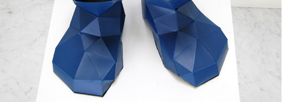
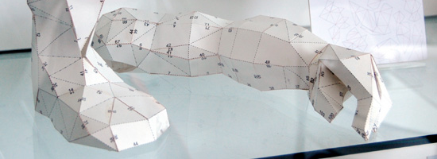
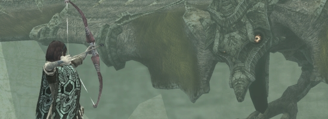
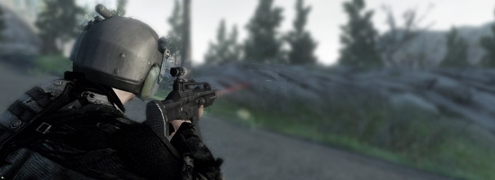
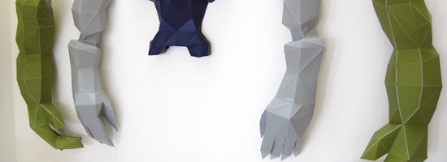

I've been meaning to link this for a while, this has to be one of the most interesting things I saw in 2009 (despite it being from 2008).
The "Avatar Machine" was created by Marc Owens, a recent participant at the designers in residence program at the Design Museum in London.
Incorporating a physical, wearable costume inspired by (and apparently directly derived from) low-poly in-game character graphics, a suspended, back-mounted camera system, and a head-mounted visual interface, the Avatar Machine essentially allows a participant to move about and interact with an environment while viewing him/herself in the third person - an entity in a 3D world, viewing oneself outside oneself.
His statement for the piece:
"The virtual communities created by online games have provided us with a new medium for social interaction and communication. Avatar Machine is a system which replicates the aesthetics and visuals of third person gaming, allowing the user to view themselves as a virtual character in real space via a head mounted interface.
The system potentially allows for a diminished sense of social responsibility, and could lead the user to demonstrate behaviors normally reserved for the gaming environment."

Game nerds everywhere rejoice (...?). Gamers are intimately familiar with the experience of visualizing a self-representational entity from a 3rd person/over-the-shoulder/behind-the-back viewpoint, as it remains a standard convention of perspective in 3D games. With that shared experience as the context for the piece, it would be wild to be able to have it translated to your actual, physical self and environment, though I expect gamers and non-gamers would approach that experience very differently.

"The system potentially allows for a diminished sense of social responsibility, and could lead the user to demonstrate behaviors normally reserved for the gaming environment."
For the most part, the language of third-person perspective 3D games is the language of violence. To a lesser extent, it also includes spatial navigation, exaggerated physical movement/capability, AI interaction, and so on - but pick up any 3rd person perspective game, and chances are good that the predominant way of affecting the virtual environment is through a physically destructive capability.
Is this what the statement suggests is the end effect of the Avatar Machine on the user?
Bearing that in mind, this hypothetical seems a bit bold to me. Can it potentially lead users to this conclusion? Or does it encourage it? Is that almost the intention of the piece?
Additionally, how much of this is enabled by the simple fact that a weapon representation is incorporated into the costume itself? Is anti-social behavior encouraged more by the simple fact that the Avatar Machine includes a modeled sword?

The language of 3rd-person games: arrows and guns. ...And swords.

If anti-social behavior is simply suggested by a sense of viewing yourself from a traditional violent game perspective, would the implications be the same were the user unfamiliar with these paradigms of gaming? If you've never experienced a third-person perspective violent game, or controlled a polygonal fighter in a virtual environment, why would you have any inclination of these things in the Avatar Machine?

For non-gamers, people unfamiliar with this viewpoint and its conventions in games, I think what would be most notable is a sense of detachment; a sense of being outside yourself.
Therefore, does Owens suggest that this sense of detachment would lead a user to said gaming-environment-type actions without having game experience? That the natural conclusion of a sense/perspective of physical personal detachment is this diminished sense of social responsibility, contextual game experience notwithstanding?
Another thought: what would be the difference in self-perception if there was no "costume," no polygonal wearable parts? Having the outfit - clunky, low-res models reminiscent of late 90s era 3D game tech - adds an immediacy, a visual impact to the piece, but doesn't necessarily say anything about self-perception; the user's place in the environment as an individual. Rather, wearing it, you become a generic bunch of abstracted polygons.
What if it incorporated appropriately digitized textures of your face, clothing, hair, etc. to a generic model, a la some existing attempts at in-game player texture mapping for custom characters? What if you were no longer "blond spiky-haired hero" and instead a differentiated, distorted representation of yourself as an individual? How then would you approach your place in the environment?